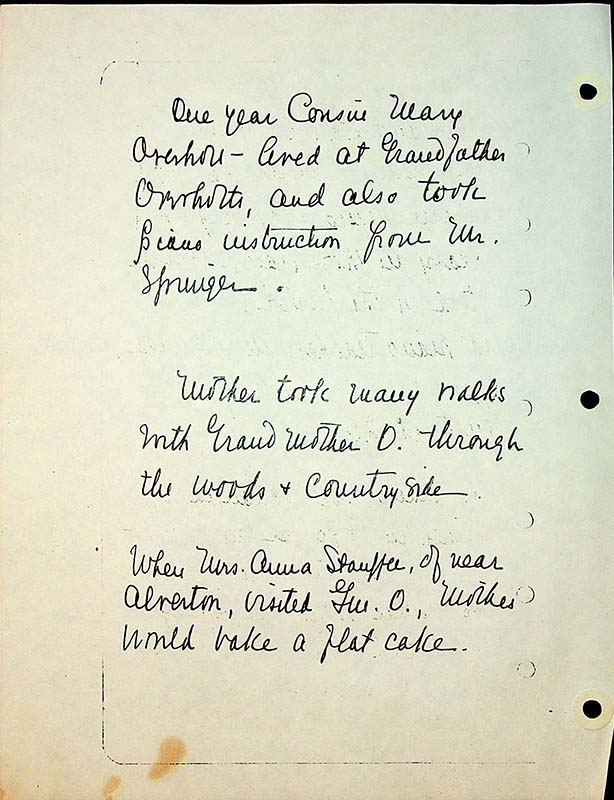

One year Cousin Mary Overholt lived at Grandfather Overholts and also took piano instruction from Mr. Springer.
Mother took many walks with Grandfather O. through the woods and countryside.
When Mrs. Anna Stauffer of near Alverton visited Gm.O, mother would bake a flat cake.